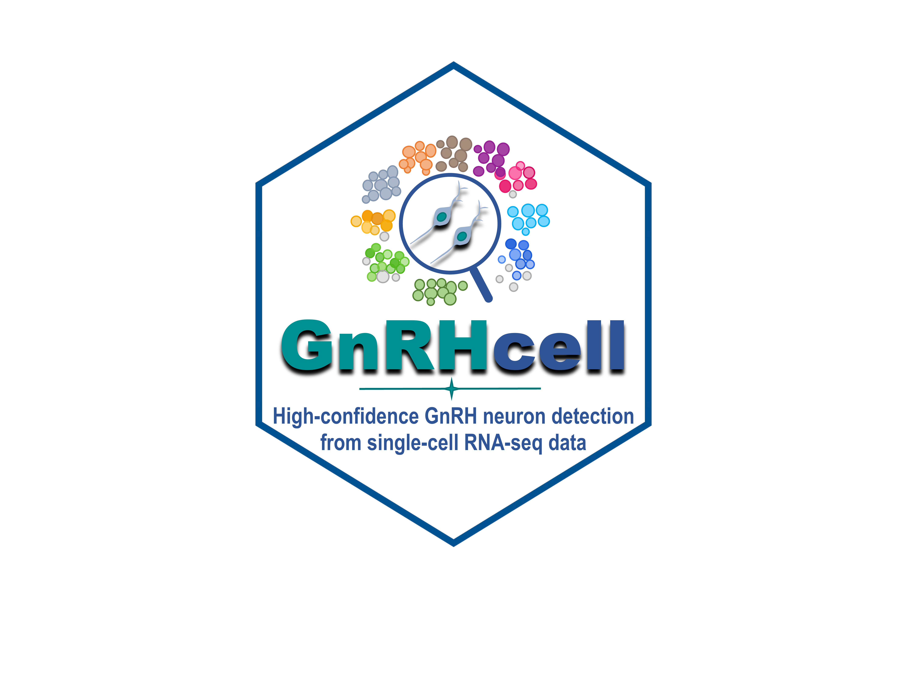

GnRHcell is an R package for identifying rare gonadotropin-releasing hormone (GnRH) neurons in single-cell transcriptomic datasets.
It provides:
- high-confidence GnRH-cell detection;
- developmental-stage assignment;
- diagnostic performance evaluation;
- marker discovery and
GNRH1co-expression analysis; - cross-dataset marker-program analysis;
- publication-ready visualizations.
The package integrates naturally with Seurat workflows. Full documentation is available at ymbouamboua.github.io/GnRHcell.
Installation
Install the development version from GitHub:
# install.packages("pak")
pak::pak("ymbouamboua/GnRHcell")Alternatively:
# install.packages("devtools")
devtools::install_github("ymbouamboua/GnRHcell")Quick start
library(GnRHcell)
library(Seurat)
# `obj` is a normalized Seurat object with a dimensional reduction.
obj <- run_gnrh(obj)The resulting metadata include GnRH detection, confidence, and developmental-stage assignments.
Visualization
Embedding
plot_gnrh_embedding(
obj,
group.by = c("gnrh_status", "gnrh_confident", "gnrh_stage"),
reduction = "umap"
)Feature expression
plot_gnrh_feature(obj, feature_type = "all", reduction = "umap")Distribution across samples
plot_gnrh_distribution(
obj,
group.by = "gnrh_stage",
split.by = "orig.ident",
proportion = TRUE,
label = FALSE,
cols = gnrh_colors("stage")
)Diagnostic report
gnrh_report(obj)The report summarizes signal distributions, threshold performance, module activity, stage composition, and classification diagnostics.
GnRH-specific gene discovery
Identify genes enriched in confident GnRH cells relative to a biologically relevant control population:
genes <- find_gnrh_genes(
object = obj,
annotation_col = "ann1",
control_label = "Neuronal",
donor_col = "status"
)
head(genes$candidates)The returned results combine differential expression, GNRH1 co-expression, specificity, and donor recurrence. Consult ?find_gnrh_genes for the available thresholds and returned tables.
Co-expression and network visualization
coexpressed <- subset(genes$markers, coexpr_flag %in% TRUE)
plot_gnrh_coexpr(coexpressed, coexp_cutoff = 0.3)
plot_network(genes$markers, top_n = 50, threshold = 0.1)Cross-dataset marker programs
files <- c(
"HuDeCa Nose" = "gnrh_human_nose_markers.tsv",
"HPSC Wang 2022" = "gnrh_human_hpsc_markers.tsv",
"Human HypoMap" = "gnrh_human_hypomap_markers.tsv"
)
marker_dir <- file.path(outdir, "markers")
gene_sets <- build_gene_sets(files = files, dir = marker_dir)
overlap <- gene_upset(
gene_sets = gene_sets,
outdir = file.path(outdir, "comparisons", "marker_overlap")
)
programs <- gnrh_marker_programs(
files = files,
results = overlap,
outdir = outdir
)
head(programs$candidate_table)
head(programs$high_confidence)
plot_gnrh_marker_programs(programs, table = "summary", type = "bar")
plot_gnrh_marker_programs(programs, table = "summary", type = "tile")Main functions
- Pipeline:
run_gnrh(),detect_gnrh(),stage_gnrh(),gnrh_diagnostics() - Marker analysis:
find_gnrh_genes(),gnrh_markers() - Cross-dataset analysis:
build_gene_sets(),gene_upset(),gnrh_marker_programs() - Visualization:
plot_gnrh_embedding(),plot_gnrh_feature(),plot_gnrh_distribution(),gnrh_report() - Utilities:
gnrh_colors(),cellpal(),plot_theme()
See the function reference for the complete API.
Development
devtools::document()
devtools::test()
devtools::check()
pkgdown::build_site()Rebuild README.md after editing this source file:
devtools::build_readme()Citation
If you use GnRHcell, please cite:
Mbouamboua Y. GnRHcell: high-confidence GnRH neuron detection and developmental staging from single-cell RNA-seq data.
License
GnRHcell is available under the MIT License.